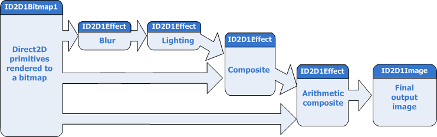

This topic shows how to apply a series of effect to Direct2D and DirectWrite primitives.
You can use the Direct2D effects API to apply effect graphs to primitives rendered by Direct2D to an image. The example here has two rounded rectangles and the text "Direct2D". Use Direct2D to draw the rectangles and DirectWrite to draw the text.
Using Direct2D effects, you can make this image look like the next image. Apply the Gaussian Blur, Point Specular Lighting, Arithmetic Composite, and Composite effects to the 2D primitives to create the image here.
After you render the rectangles and text to a intermediate surface, you can use this as input for ID2D1Effect objects in the image graph.
In this example, set the original image as the input to the Gaussian Blur effect and then set the output of the blur as the input for the Point Specular Lighting effect. The result of this effect is then composited with the original image twice to get the final image that is rendered to the window.
Here is a diagram of the image graph.

This effect graph consists of four ID2D1Effect objects, each representing a different built-in effect. You can create and connect custom effects in the same way, after you register them using ID1D1Factory1::RegisterEffect. The code here creates the effects, sets the properties, and connects the effect graph shown earlier.
Create the Gaussian blur effect using the ID2D1DeviceContext::CreateEffect method and specifying the proper CLSID. The CLSIDs for the built-in effects are defined in d2d1effects.h. You then set the standard deviation of the blur using the ID2D1Effect::SetValue method.
// Create the Gaussian Blur Effect
DX::ThrowIfFailed(
m_d2dContext->CreateEffect(CLSID_D2D1GaussianBlur, &gaussianBlurEffect)
);
// Set the blur amount
DX::ThrowIfFailed(
gaussianBlurEffect->SetValue(D2D1_GAUSSIANBLUR_PROP_STANDARD_DEVIATION, sc_gaussianBlurStDev)
);
The Gaussian blur effect blurs all of the channels of the image, including the alpha channel.
Create the specular lighting effect and set the properties. The position of the light is a vector of 3 floating point values, so you must declare it as a separate variable and pass it to the SetValue method.
// Create the Specular Lighting Effect
DX::ThrowIfFailed(
m_d2dContext->CreateEffect(CLSID_D2D1PointSpecular, &specularLightingEffect)
);
DX::ThrowIfFailed(
specularLightingEffect->SetValue(D2D1_POINTSPECULAR_PROP_LIGHT_POSITION, sc_specularLightPosition)
);
DX::ThrowIfFailed(
specularLightingEffect->SetValue(D2D1_POINTSPECULAR_PROP_SPECULAR_EXPONENT, sc_specularExponent)
);
DX::ThrowIfFailed(
specularLightingEffect->SetValue(D2D1_POINTSPECULAR_PROP_SURFACE_SCALE, sc_specularSurfaceScale)
);
DX::ThrowIfFailed(
specularLightingEffect->SetValue(D2D1_POINTSPECULAR_PROP_SPECULAR_CONSTANT, sc_specularConstant)
);
The specular lighting effect uses the alpha channel of the input to create a height map for the lighting.
There are two different composite effects that you can use the composite effect and the arithmetic composite. This effect graph uses both.
Create the composite effect and set the mode to D2D1_COMPOSITE_MODE_SOURCE_IN, which outputs the intersection of the source and destination images.
The arithmetic composite effect composes the two input images based on a formula defined by the World Wide Web Consortium (W3C) for the Scalable Vector Graphics (SVG) standard. Create arithmetic composite and set the coefficients for the formula.
// Create the Composite Effects
DX::ThrowIfFailed(
m_d2dContext->CreateEffect(CLSID_D2D1Composite, &compositeEffect)
);
DX::ThrowIfFailed(
compositeEffect->SetValue(D2D1_COMPOSITE_PROP_MODE, D2D1_COMPOSITE_MODE_SOURCE_IN)
);
DX::ThrowIfFailed(
m_d2dContext->CreateEffect(CLSID_D2D1ArithmeticComposite, &m_arithmeticCompositeEffect)
);
DX::ThrowIfFailed(
m_arithmeticCompositeEffect->SetValue(D2D1_ARITHMETICCOMPOSITE_PROP_COEFFICIENTS, sc_arithmeticCoefficients)
);
The coefficients for the arithmetic composite effect are shown here.
D2D1_VECTOR_4F sc_arithmeticCoefficients = D2D1::Vector4F(0.0f, 1.0f, 1.0f, 0.0f);
In this effect graph, both of the composite effects take the output of the other effects and the intermediate surface as inputs and composites them.
Finally, you connect the effects to form the graph by setting the inputs to the proper images and bitmaps.
The first effect, Gaussian blur, receives its input from the intermediate surface that you rendered the primitives to. You set the input using the ID2D1Effect::SetInput method and specifying the index of an ID2D1Image object. The Gaussian blur and specular lighting effects have only a single input. The specular lighting effect uses the blurred alpha channel of the Gaussian blur
The composite and arithmetic composite effects have multiple inputs. To make sure the images are put together in the right order, you must specify the correct index for each input image.
// Connect the graph.
// Apply a blur effect to the original image.
gaussianBlurEffect->SetInput(0, m_inputImage.Get());
// Apply a specular lighting effect to the result.
specularLightingEffect->SetInputEffect(0, gaussianBlurEffect.Get());
// Compose the original bitmap under the output from lighting and blur.
compositeEffect->SetInput(0, m_inputImage.Get());
compositeEffect->SetInputEffect(1, specularLightingEffect.Get());
// Compose the original bitmap under the output from lighting and blur.
m_arithmeticCompositeEffect->SetInput(0, m_inputImage.Get());
m_arithmeticCompositeEffect->SetInputEffect(1, compositeEffect.Get());
Pass the arithmetic composite effect object into the ID2DDeviceContext::DrawImage method and it processes and draws the output of the graph.
// Draw the output of the effects graph.
m_d2dContext->DrawImage(
m_arithmeticCompositeEffect.Get(),
D2D1::Point2F(
(size.width - sc_inputBitmapSize.width) / 2,
(size.height - sc_inputBitmapSize.height) / 2 + sc_offset
)
);
Â
Â